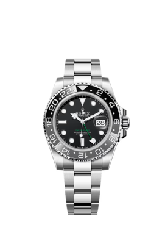

Brand Details
Submariner
Oyster, 41 mm, Oystersteel
Datejust 36
Oyster, 36 mm, Oystersteel and white gold
GMT MASTER Ⅱ
Oyster, 40 mm, Oystersteel
Datejust 41
Oyster, 40 mm, Oystersteel and white gold
Submariner Date
Oyster, 40 mm, Oystersteel
Lady-Datejust
Oyster, 28 mm, Oystersteel and white gold
oyster Perpetual 41
Oyster, 41 mm, Oystersteel